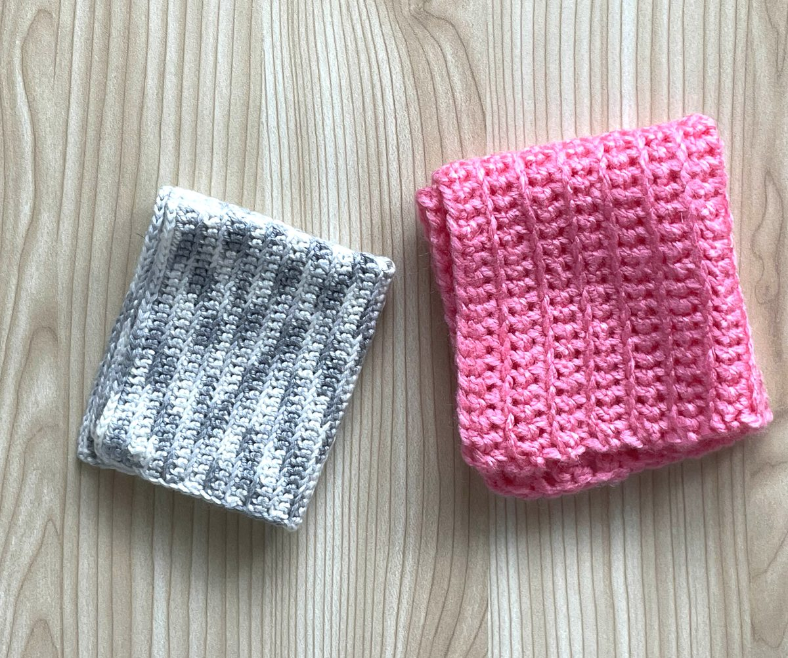

今日日、左利きであることは特に珍しいことでもなんでもないが、こと手芸においては大変むずかしい。
手芸は長らく女性の仕事とされてきている。本屋や図書館に行けば言わずもがな「女の棚」とでもいうところに手芸ものが並んでいる。昨今の編み物ブームも女性中心のプロモーションになっている印象がある。しかし、そのブームの中でも、あんなにたくさんある本の中でも、「左利きの手芸」にフォーカスしているものは非常に少ない。なぜそう言い切れるかって、わたしがそれを探してさまよい、困っている張本人だからだ。
そういえば、わたしは小さなころから手芸に興味のある子どもだった。母が子ども用のワンピースを何枚も仕立ててくれて、それを着るのがちょっとした楽しみだった。そんな母にあこがれたのかは覚えていないが、小学５年生にして「手芸クラブ」に入った。小学校の家庭科の先生が顧問だ。クラブメンバーで縫い物やパッチワークをする。小学生でまだ作業がおぼつかないので、基本的に先生が教えていくシステムだった。しかしわたしはそこで何も教えてもらえなかった。「うまくできないんです」への回答は、「あなたは左利きだからね」だけだった。程なくしてわたしは親の事情で転校することになり、そのクラブは４カ月で退部した。転校先の学校で入ったのは手芸クラブではなかった。
そこから１５年ほど経って、インターネットが発達し、「左利きも縫い物や編み物ができる」という当たり前のことにようやく気がついた。しかし、やりづらい。今もこの悩みは変わらない。特に編み物においてそれは顕著だ。
「右手でこの糸を掴んで……」 これはわたしは左手？「右から左に編み進めていくだけ」 それができないから、ひっくり返して読むぞ。
そういうことの繰り返しで、ただ帽子を編みたいだけなのに、ただ靴下を作りたいだけなのに、脳がとにかく疲れていく。画像や映像を反転して見ることもある。しかし、画像や映像を反転しつつ、文章や音声で出てくる「右・左」の単語をも咄嗟にすべて反転して読み取る／聞き取るのは、わたしには不可能だ。左利き用の本を見ればいいじゃない、と右利きニッターのマリー・アントワネットなら言うだろう――マリー・アントワネットが実際にはこの言葉を言っていないのは知っている――。そう、アントワネットさま、そのような情報は既に調べてございます。それがあまりにも乏しいので、更なる情報をインターネットや本で探しているのです。そうするとそこに広がっているのは、なんということでしょう、右利きの世界なのでございます。WELCOME TO THE MAJORITY LAND! マジョリティの世界へようこそ。「左利きの人はなぜか頭で反転して手を動かすことができるみたいです」と言っている手芸の先生もいらっしゃいました。そんな生まれつきの能力があるなら、わたくし、苦労していないと思いませんか？ 右利きの先生しかいなくて時間とお金を無駄にし、恥で縮こまることを考えてしまって、教室や編み物会に通うことを諦めている人間がここにいるわけでございます。
そんな茶番はどうでもよく、へとへとになった左手を置いてふと考える。なぜこんなことになっているのだろう？ 今日日左利きの人間は多いはずなのに、なぜ手芸の本はない？もしかしたら女性よりも男性の方が左利きの人口が多いことが起因しているのかもしれない、と考えた。それはどこかの記事だったか本だったかで読んだ一節にあったものだ。どこで見たか忘れてしまったので調べた。意外なことに、原典にあたることがなかなかに難しかった。結局、レファレンス協同データベースで「右利きの人と左利きの人の割合を知りたい。世界および日本における割合もわかるとよい。」と質問しているケースが紹介されており、そこに手がかりが多少見つかった。
かなり古いデータである上に孫引きになってしまいかなり嫌だが、『女の脳・男の脳』（田中富久子著 日本放送出版協会 1998）にこのような記述があるという（この書籍タイトルも輪をかけて嫌だ）。
p154「左手利きの比率は、歴史、民族を超えて5-10%と一定であり、その決定には遺伝的要因が大きいことは確かである。前原勝矢が、日本人の男女7351人を対象に調査したところ、比率は男性3.6%、女性2.7%だったという。そして、親や兄弟姉妹など、家族に左手利きがいる場合といない場合とを比較すると、家族に左手利きがいない場合は2-3%であるのに対し、いる場合は男性10.7%、女性8.7%と有意に高率となった。これは、利き手が遺伝的に決められることを物語っている。」
今はどうだか分からないが、とにかくわたしが子どもとして育てられていた時期くらいまでは女性の左利きは少なかった、ということのようだ。これでわたしの「女性よりも男性の方が左利きの人口が多いゆえに、女性の左利き向けの本は少ないのかもしれない」という仮説がいちおう成立した。したのか？
いろいろと書いたが、ようするに二重苦だ。女性であるがゆえに手芸の本のバリエーションが少なく――図書館に行くと、毎年毎年どうして同じ内容で出版できるのでしょうと驚くような、同じような内容の本がずらりと並んでいる――、左利きであるが故にそれがさらに少ないというわけだ。WELCOME TO THE MAJORITY LAND! マジョリティの世界へようこそ。 早くこんなことを言わないでいいようになってほしい。今のところの最適な勉強法は、右利きのニッターの先生（妹）に対面で教わることだ。しかし毎日先生をお呼び立てするわけにもいかないわけで、今日もわたしは、今のところひとりで手芸をしている。

こういう文章を集めた本『Knitting＆Sewing』を制作中です。応援よろしくお願いします。